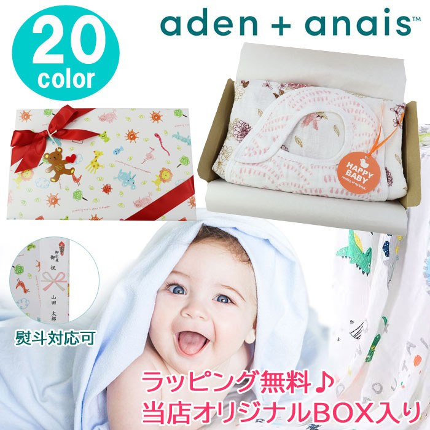
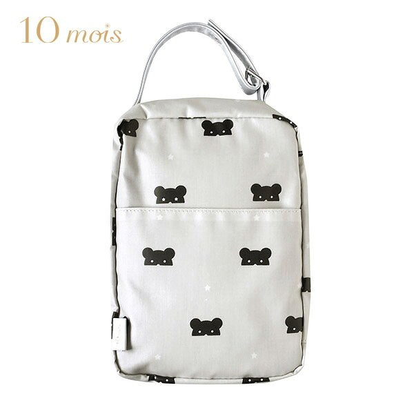
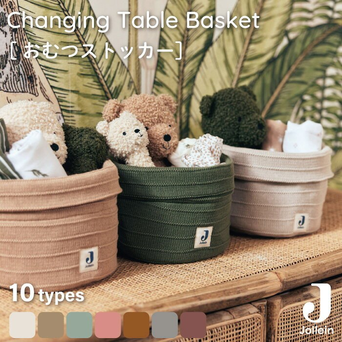
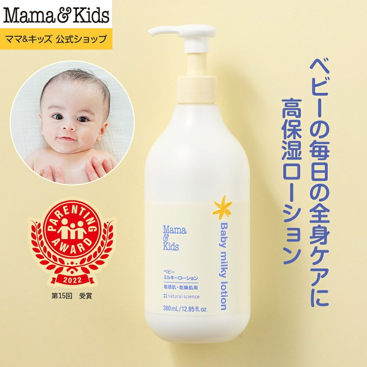
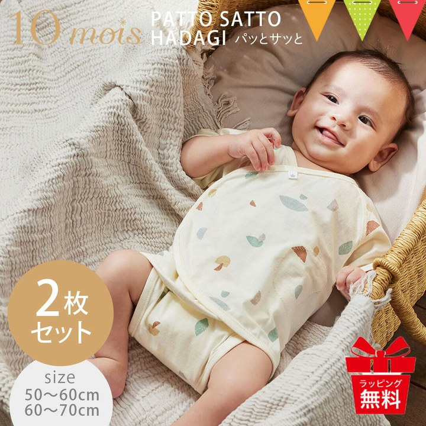
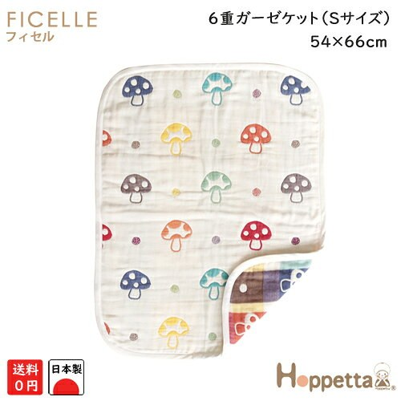
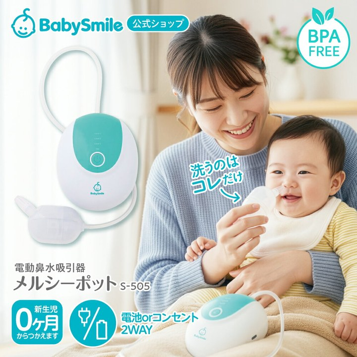
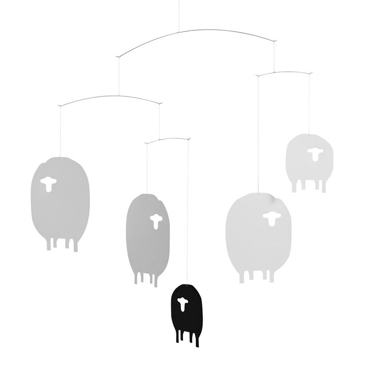

寝かしつけ・夜泣き夜を越えるための道具。夜間対応で消耗している人向け。

首まわりがもたつかない。モスリンは薄いぶん顎の下で嵩張らず、抱いたときに邪魔になりません。同じ用途の8件で比べると、最安より10円高いだけでレビューは4倍ついています。 スタイセット エイデンアンドアネイ おくるみ スタイ 当店オリジナル ギフトセット エイデン＆アネイ aden&anais エイデン アンド ¥2,980 楽天市場で見るおむつまわり1日10回以上さわる場所。ここが楽になると生活が変わる。

片手しか空いていない前提。フラップがワンタッチで開くので、赤ちゃんを押さえたまま中身を出せます。おしりふきを内側に仕込めるぶん、外出先で開く回数が減ります。 10mois ディモワBEAR MASK ( ベアマスク ) ワンタッチおむつポーチ フラップ付き 【オムツポーチ】【おむつポーチ おしりふ ¥4,510 楽天市場で見る
床に置いても様になる。ニットのバスケットなので、おむつを入れたままリビングに出しておけます。同じ用途の8件を見比べて、価格と評価の釣り合いが一番よかったものです。 おむつストッカー ニット製 オムツストッカー おむつケース おむつ収納 おむつ オムツ 収納 バスケット 小物入れ jollein ヨレイン ¥3,980 楽天市場で見る授乳・ミルク授乳まわりで実際に使っているもの。

風呂上がりに迷わない。無香料で伸びがいいので、暴れる相手に片手で塗り広げられます。380mlの大きい方を選ぶと、途中で切らして焦ることがなくなります。 ママ&キッズ (Mama&Kids)【公式】 ベビー ミルキーローション お得用サイズ 380ml ベビーローション ボディミルク スキンケ ¥5,170 楽天市場で見る肌着・ウェア新生児サイズはすぐ小さくなるので、枚数で回すもの。

着せるのに手こずらない。肩と股が大きく開くので、腕を通すというより寝かせたまま巻いて留める感覚です。50〜70cmの2枚組で、新生児のうちは洗い替えが要ります。 ＼3点購入でポーチ付／【リニューアル】10mois（ディモワ） PATTO SATTO HADAGI 2枚セット ｜フレンチバニラ／キャラメ ¥5,500 楽天市場で見るガーゼ・タオル何枚あっても足りないもの。洗濯を回すための在庫。

柄物なのにうるさくない。きのこ柄は色数が絞ってあって、リビングに出しっぱなしでも浮きません。ミニサイズなので、抱っこのときに掛ける一枚として持ち歩けます。 【日本製】フィセル ホッペッタ きのこ柄 6重ガーゼケットミニ 寝冷え対策 出産祝い 5242 【BOX】 ¥2,970 楽天市場で見るそのほか育児グッズ分類しきれなかったもの。

自分の口で吸わなくて済む。鼻がつまると寝てくれないので、夜に効きます。同じ用途の8件の中で、レビューが最多（8,637件）でした。分解して洗う手間はかかります。 【 BabySmile公式 】電動鼻水吸引器 メルシーポット S-505 | 電動鼻水吸引器 鼻水吸引器 電動 鼻吸い器 鼻吸い 吸引器 鼻 ¥7,980 楽天市場で見る
天井を見ている時間が長い。まだ寝返りもしない時期は視界がほぼ天井なので、そこに一つ置いてみました。紙と糸だけの軽いもので、空調の風でゆっくり回ります。 北欧 フレンステッドモビール Sheep ヒツジ 羊 動物 FLENSTED mobiles おしゃれ インテリア 雑貨 赤ちゃん 天井 吊 ¥5,610 楽天市場で見る